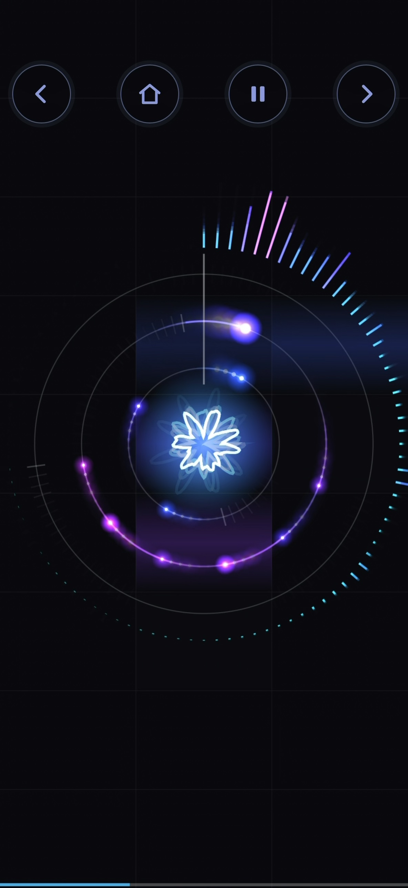
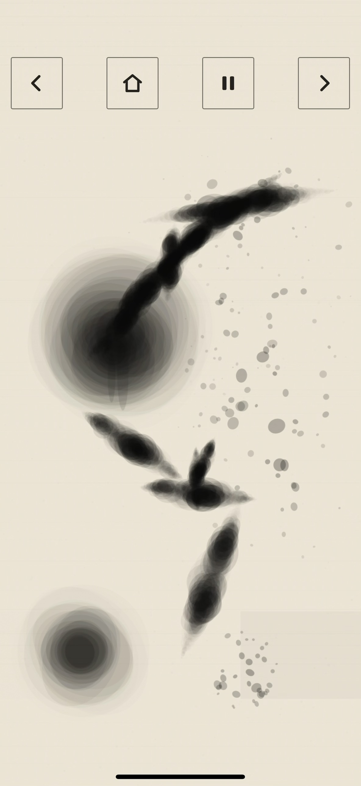
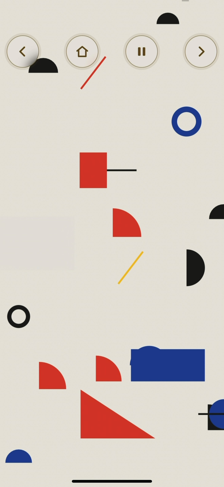

指先から、音楽が生まれる。
タップして、長押しして、なぞって。複数のマスを同時に押して、和音やリズムを重ねることもできます。

21の音と映像の世界。
画面を切り替えると、音色も映像もがらりと変わります。光、墨、幾何学模様など、好きな世界を見つけてください。


タップして、長押しして、なぞって。複数のマスを同時に押して、和音やリズムを重ねることもできます。

画面を切り替えると、音色も映像もがらりと変わります。光、墨、幾何学模様など、好きな世界を見つけてください。
